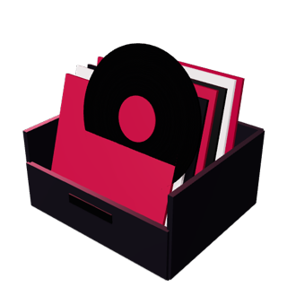
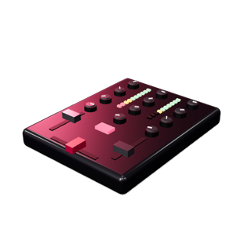
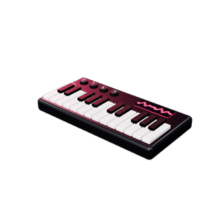
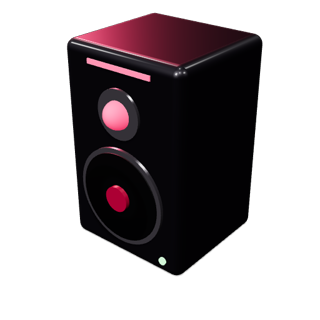
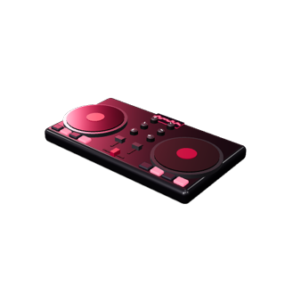
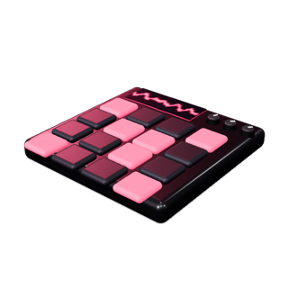
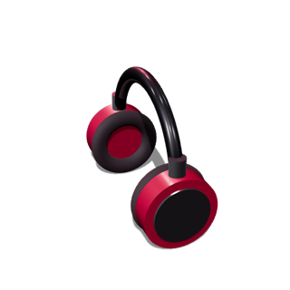
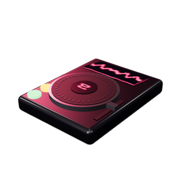
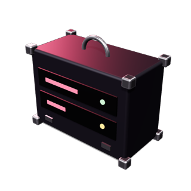

ظبّط اسم الأغنية والكفر
الاسم يتكتب فرانكو أو يتنضّف من الكلام الزيادة، والكفر بتاعك يتحط على الأغنية.

ظبّط بلاي ليست كاملة
اختار فولدر فيه أغاني كتير، وكلها تتظبط مرة واحدة.

ارفع جودة الأغنية
شيل الوشّ، رجّع الحدّة، ظبّط الـ EQ، وارفع الصوت لمستوى الدي جي.

اعمل ريمكس
حط أغنية واختار House أو Techno أو Afro أو مهرجانات… والبرنامج يعمل الريمكس، ويصدّره لـ Ableton و FL و Logic.
شازام
افتح شازام جوه البرنامج، وأي أغنية يعرفها تفتحها في Spotify أو أنغامي بدوسة.

اسمع السيت كامل
حط لينك أو ملف السيت، والبرنامج يسمعه كله ويكتبلك كل تراك مرة واحدة.

اعمل ماشاب
حط مجموعة أغاني، والبرنامج يعمل ميجامكس بانتقالات دي جي، أو يحط صوت أغنية على مزيكا أغنية تانية.

شيل بصمة الصوت
شيل "DJ Sasso" أو "Here comes…" أو أي كلمة مش عاجباك، والمزيكا تفضل زي ما هي.

اعرف أسامي التراكات
يسمع الميكس أو الست، ويكتبلك اسم كل تراك وتوقيته.

دوّر على أغنية
Spotify و YouTube و Shazam، ومحلات الشرا القانونية للدي جي.

البيانات وسجل التعديلات
كل تعديلاتك وإعداداتك متسجلة ومحفوظة، حتى لو مسحت البرنامج أو نزّلت نسخة جديدة.
ظبّط اسم الأغنية والكفر
ظبّط بلاي ليست كاملة
| الاسم الأصلي | اسم الأغنية (فرانكو) | المطرب (فرانكو) | الحالة |
|---|
اعرف أسامي التراكات
- حط لينك الفيديو ودوس "شغّل واسمع".
- الفيديو هيشتغل في شباك جوه البرنامج. البرنامج بيسمعه، وبيقرا كمان اللي يوتيوب نفسه عرفه عن الأغاني اللي في الفيديو، والفصول والوصف والتعليقات، ويكتبلك أسامي التراكات.
- عايز يخلص أسرع؟ قدّم الفيديو بإيدك دقيقة دقيقة، والتوقيت هيتظبط لوحده.
وضع شازام
- افتح Shazam على الموبايل، ودوس مطوّلاً على زرار Shazam الكبير عشان يشتغل Auto Shazam.
- حط الموبايل جنب سماعة الكمبيوتر، وعلّي الصوت شوية.
- دوس الزرار تحت واختار ملف الميكس. البرنامج هيقطّعه ويشغّل 12 ثانية من كل دقيقة ورا بعض، وشازام هيتعرّف على كل تراك.
- لما يخلص، افتح Library في شازام، هتلاقي التراكات كلها بالترتيب.
- افتح dashboard.audd.io واعمل حساب.
- هتلاقي API Token، انسخه والصقه هنا. البرنامج بيحفظه ومش هتحتاج تحطه تاني.
وصف الفيديو، آخر حاجة البرنامج يرجعلها (اختياري)
| الوقت | التراك | المصدر | هات التراك |
|---|
ارفع جودة الأغنية
البيانات وسجل التعديلات
- مكتبة بصمات الأغاني (عشان "اعرف أسامي التراكات")
- تصحيحاتك للفرانكو: لو عدّلت اسم مرة، البرنامج بيتعلّمه ويكتبه صح بعد كده
- كل الإعدادات والاختيارات
- سجل بكل تعديل عملته على أي أغنية
تصحيحات الفرانكو اللي البرنامج اتعلّمها
| بالعربي | بيتكتب |
|---|
آخر التعديلات
| الوقت | إيه اللي اتعمل | الأغنية | التفاصيل |
|---|
اعمل ريمكس
عايز الأغنية دي تبقى إيه؟
اعمل ماشاب
| # | الأغنية | BPM | المقام |
|---|
نوع الماشاب
شازام
اسمع السيت كامل
شيل بصمة الصوت
| من | لحد | هيتعمل إيه |
|---|